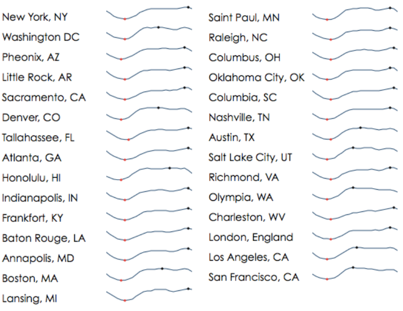
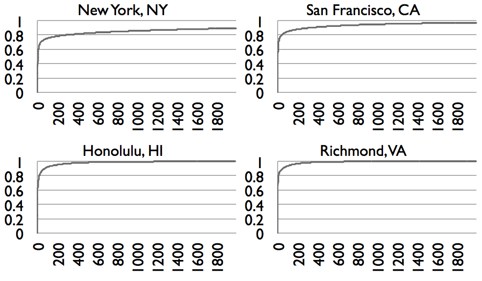
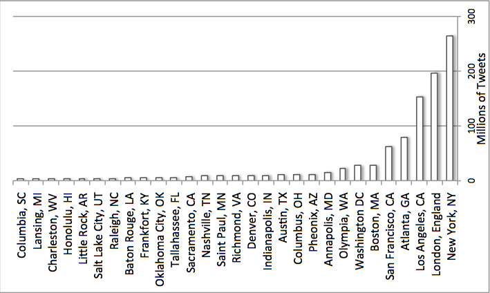
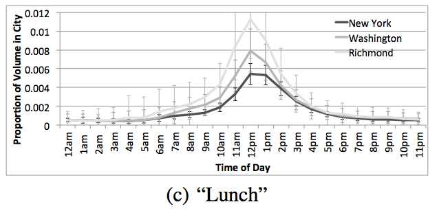
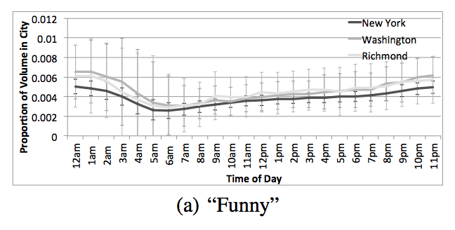
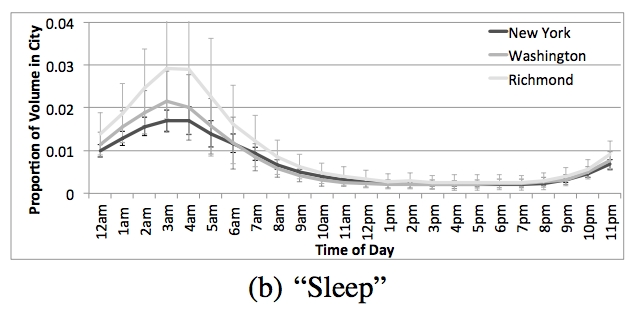
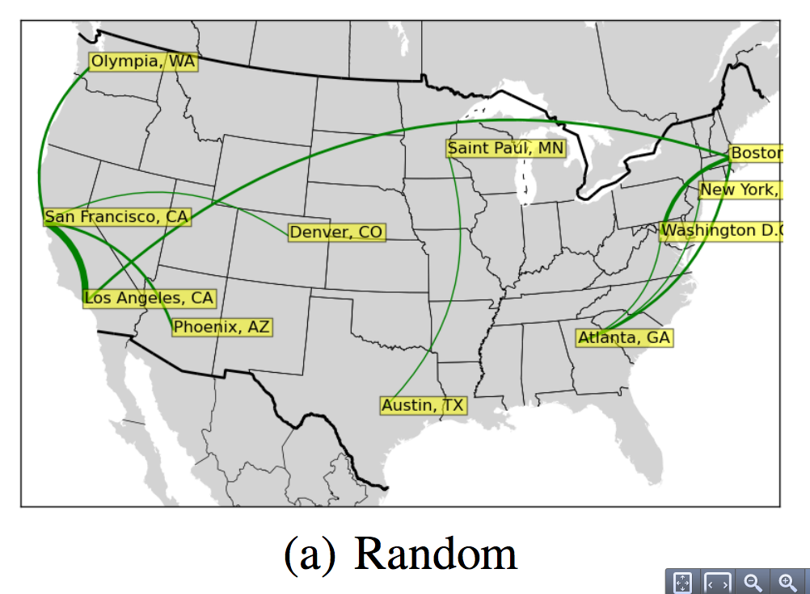
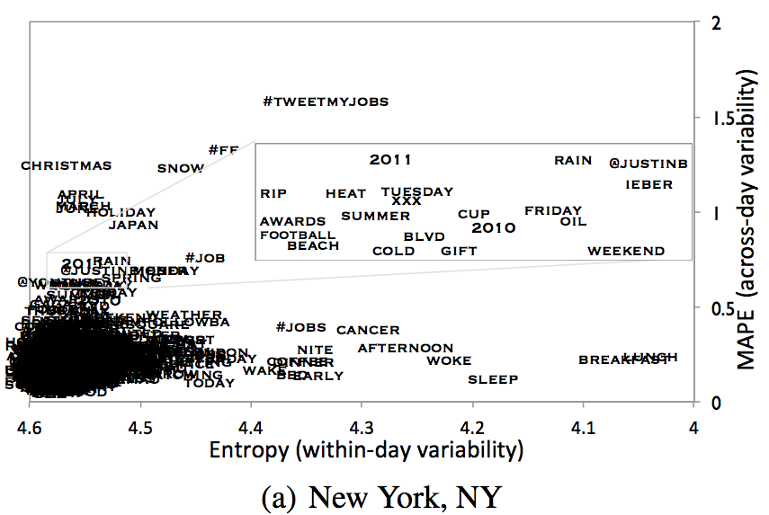
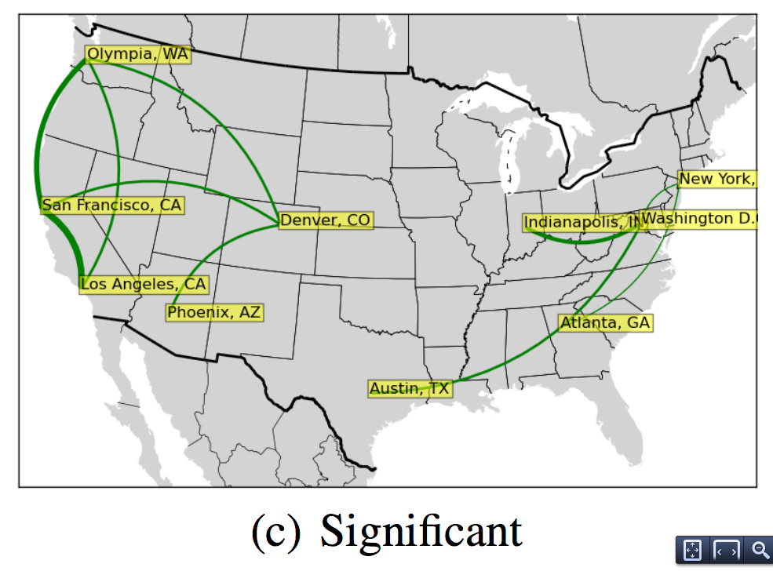
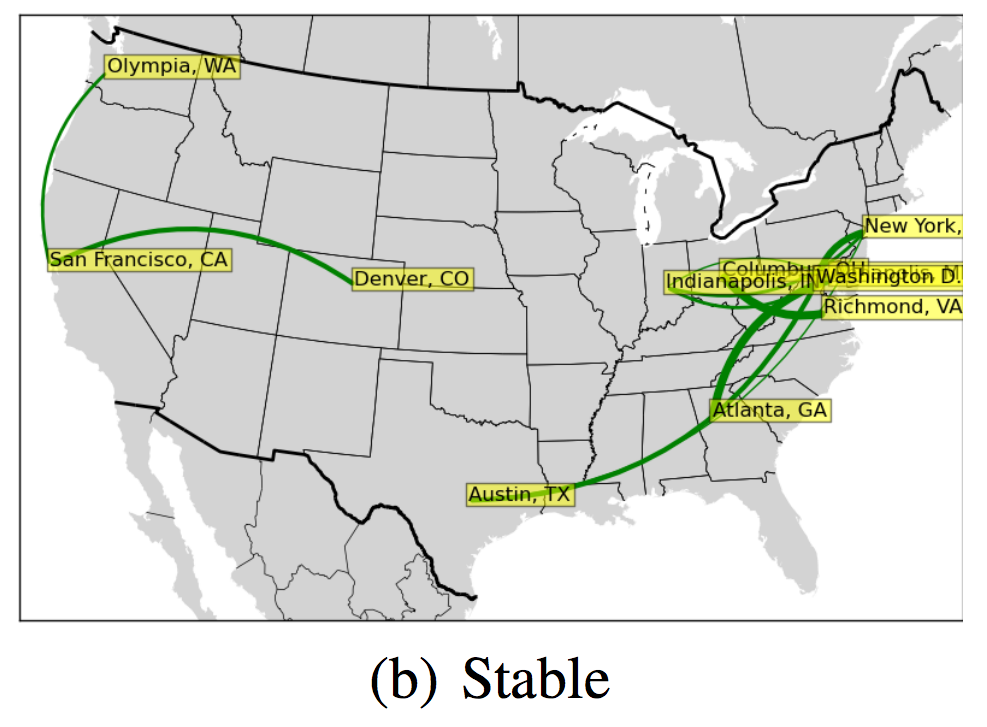

On the Study of Diurnal Urban Routines on Twitter
M Naaman, ICWSM
Twitter Noise is Multidimensional
We should sample from twitter along many dimensions
Geocoded (lat, lon):0.6%
User Profile: 57%
(New York, NY)
(Harlem)
the 500 most popular location terms in New York
account for about 82% of all located tweets in NYC

Volume Across Cities

150 million tweets from Los Angeles
an average of about 400,000 a day
Keywords (sort of like #hashtags)
the normalized volume, in
each city, for every keyword, for every one hour span



Geographic Similarity...
...for Randomly Selected Words


...High Entropy Words(e.g. not "Breakfast" but maybe including "Christmas")

...Low MAPE (e.g. not "Christmas" but maybe including "Breakfast")
